Тейп при боли в шее, правом плече и лопатке
Схема для случая: шея болит и отдаёт в правое плечо, ключицу и лопатку при наклоне головы к плечу или когда опускаешь плечо. Тейп клеит помощник, на себе сзади это не сделать.
Сначала одна проверка
Наклон головы ВЛЕВО (от больной стороны) и боль справа тянущая: мышцы перегружены и растягиваются. Это типичный случай для тейпа и растяжки.
Наклон головы ВПРАВО (к больному плечу) и боль стреляет в плечо, лопатку или руку: шея может сдавливать нервный корешок. Тейп тогда только облегчает, а сначала нужен врач, особенно если есть покалывание или онемение в руке.
Какие мышцы, скорее всего, виноваты
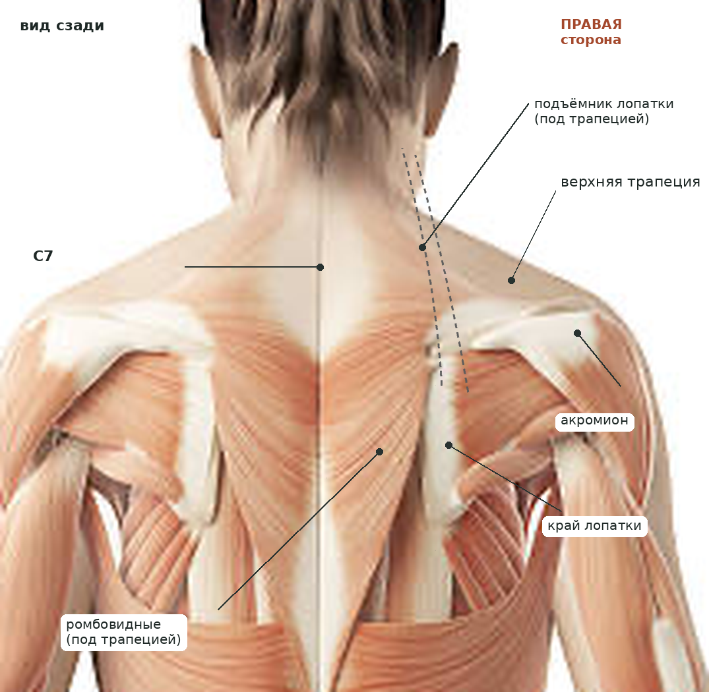
- Верхняя трапеция (красная): от затылка к краю плеча и ключице. Перегружена от телефона, сумки на плече, ношения ребёнка, сидения. Даёт боль по верху плеча и к шее.
- Подъёмник лопатки (фиолетовый): от шеи к верхнему углу лопатки. Классическая боль «в угол лопатки» и при наклоне головы.
- Ромбовидные (жёлтые): между позвоночником и лопаткой. Ноют, когда плечи весь день вперёд.
- Лестничные (жёлтые сбоку): спереди-сбоку шеи, к первым рёбрам за ключицей. Могут давать боль в ключицу и плечо. Их тейпом не клеим, только мягко растягиваем.
Схема тейпов
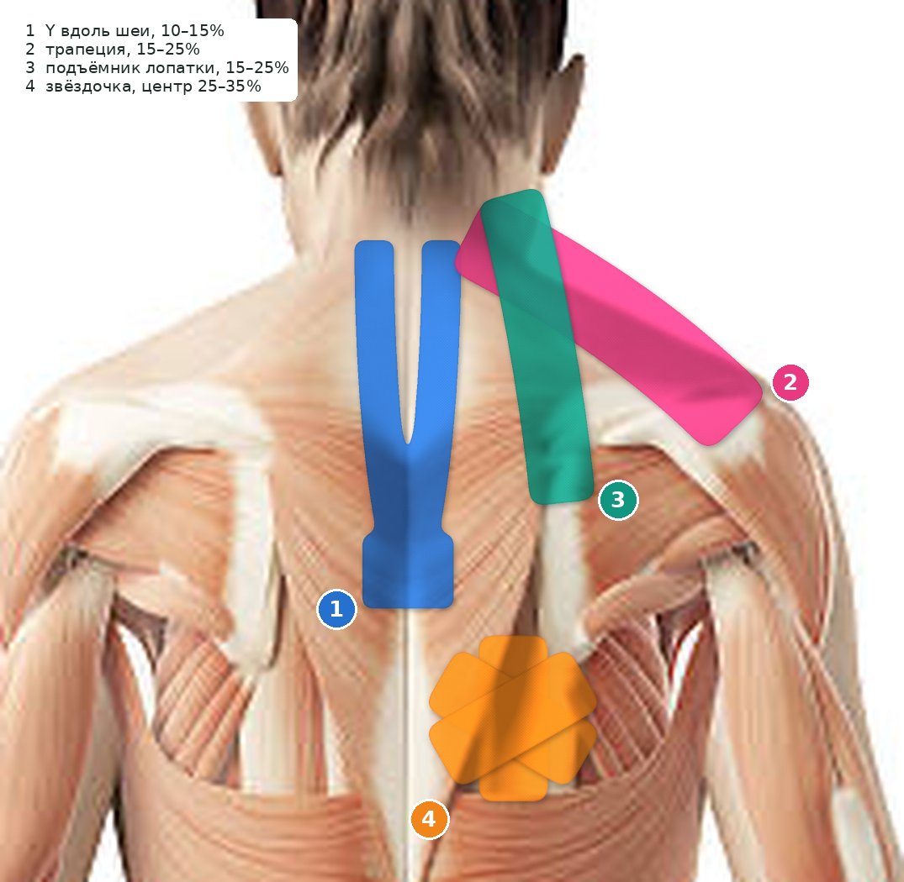
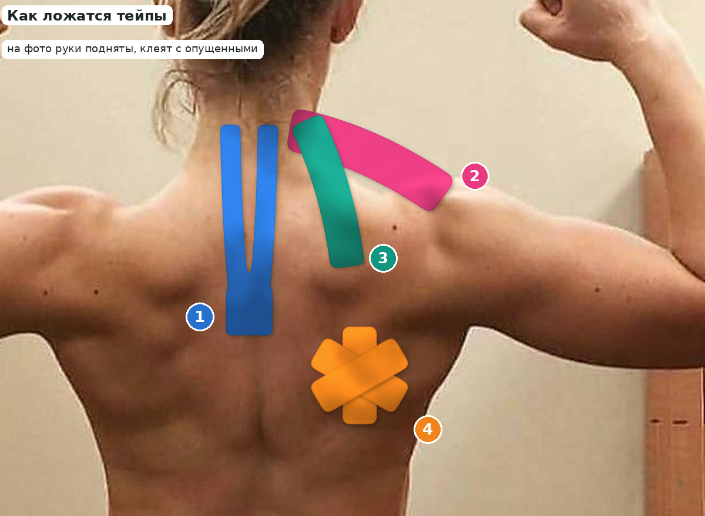
Порядок: 1, затем 2, затем 3, звёздочку 4 последней и только если есть одна болезненная точка. Для начала можно ограничиться полосами 2 и 3: они работают прямо на две главные мышцы. Полосу 1 добавить, если болит и по центру шеи.
Почему именно так
- Полосы 2 и 3 идут от прикрепления мышцы к её началу (от плеча и лопатки к шее), с небольшим натяжением 15–25%. Это стандартная расслабляющая техника кинезиотейпирования: она снижает тонус перегруженной мышцы.
- Клеим в растянутой позе. Когда голова возвращается прямо, на ленте появляются складочки: кожа над мышцей приподнята, давление на ткани под ней меньше, и это помогает местному крово- и лимфотоку.
- Лента всё время даёт мягкий сигнал коже: человек реже задирает плечо и сутулится, мышца отдыхает.
- Честно о пользе: по исследованиям тейп снимает боль в шее на время, в первые дни и недели, примерно как другие физиопроцедуры. Надолго помогают упражнения ниже и меньше нагрузки на это плечо.
По шагам: как ложатся полосы
Белый пунктир на полосе: граница якоря, до него лента лежит без натяжения. Стрелка: куда вести ленту.
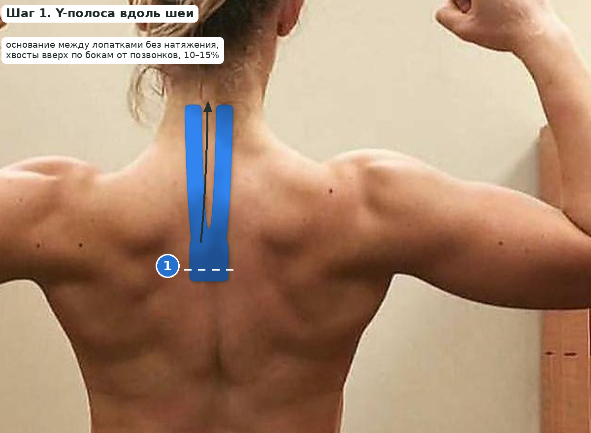
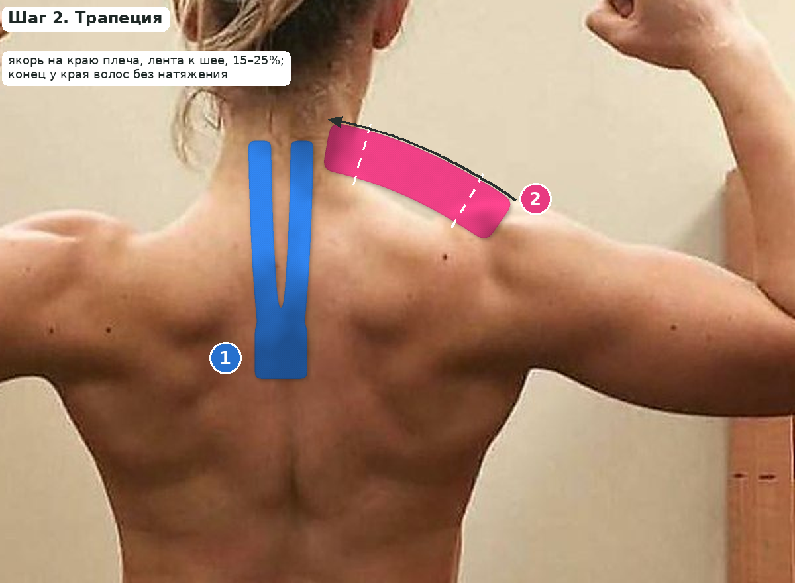
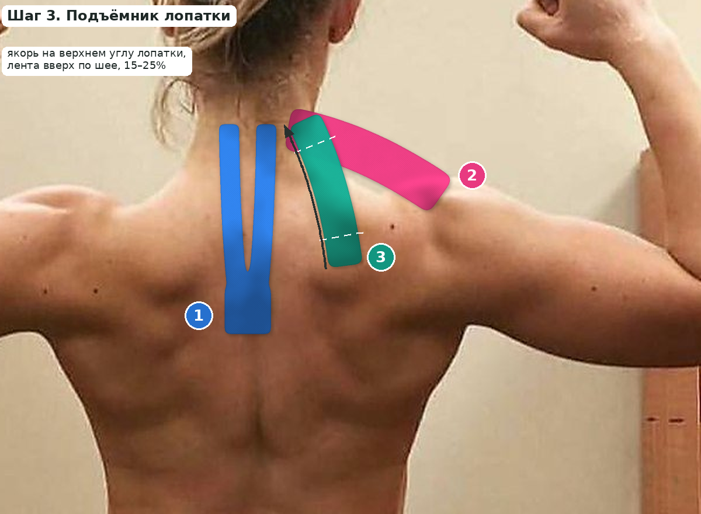
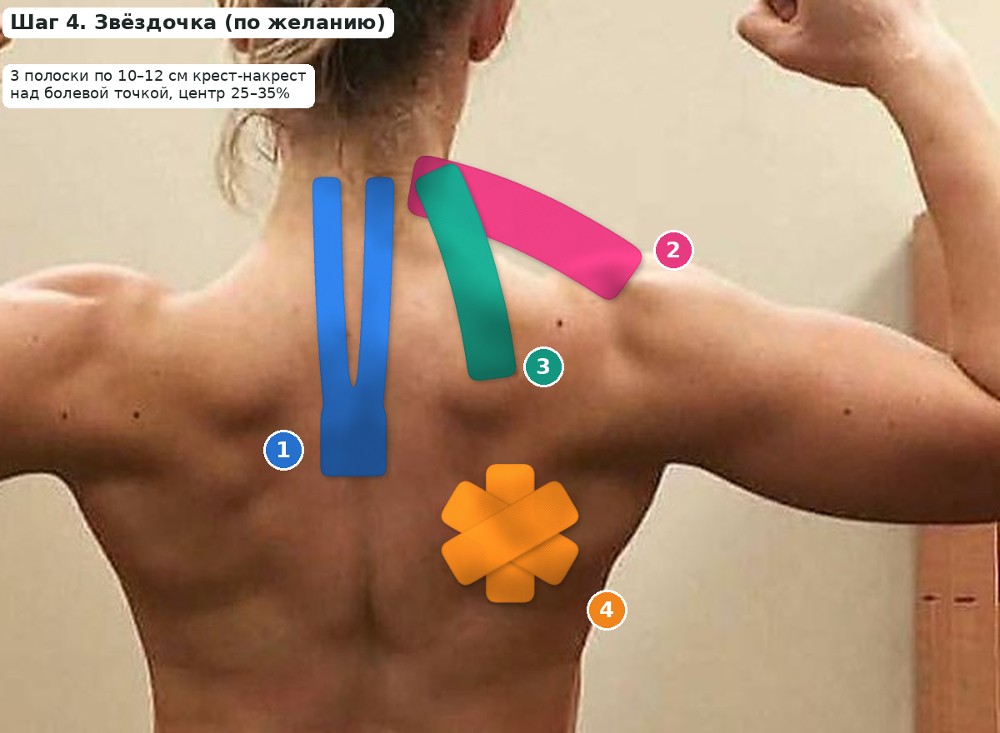
Поза головы для каждой полосы
Стрелка: правое плечо опустить вниз (держаться правой рукой за сиденье). Тянуть до лёгкого натяжения, не до боли.
Каждая полоса подробно
1Y-полоса вдоль шеи
Задача: снять напряжение длинных мышц сзади шеи (разгибатели), которые держат голову весь день.
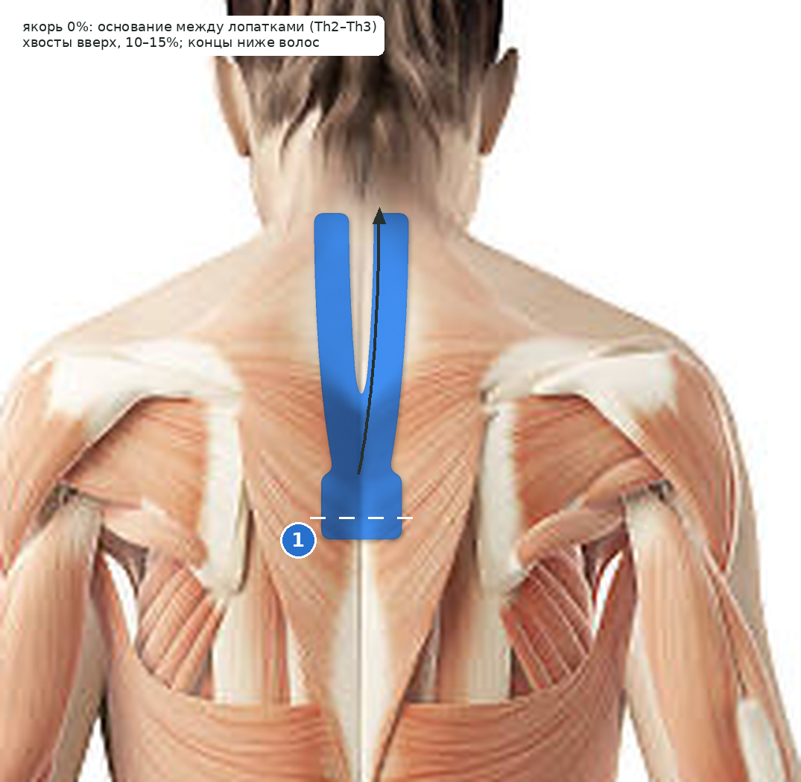
- Наклеить основание без натяжения, потереть ладонью 10 секунд.
- Подруга опускает подбородок к груди, шея тянется.
- Каждый хвост слегка натянуть (10–15%) и вести вверх по бокам от позвоночника, не на сам позвонок.
- Последние 3 см каждого хвоста без натяжения, ниже линии волос.
2I-полоса на верхнюю трапецию справа
Главная полоса. Трапеция поднимает плечо и наклоняет голову: при её спазме тянет от шеи в плечо, ключицу и к лопатке.
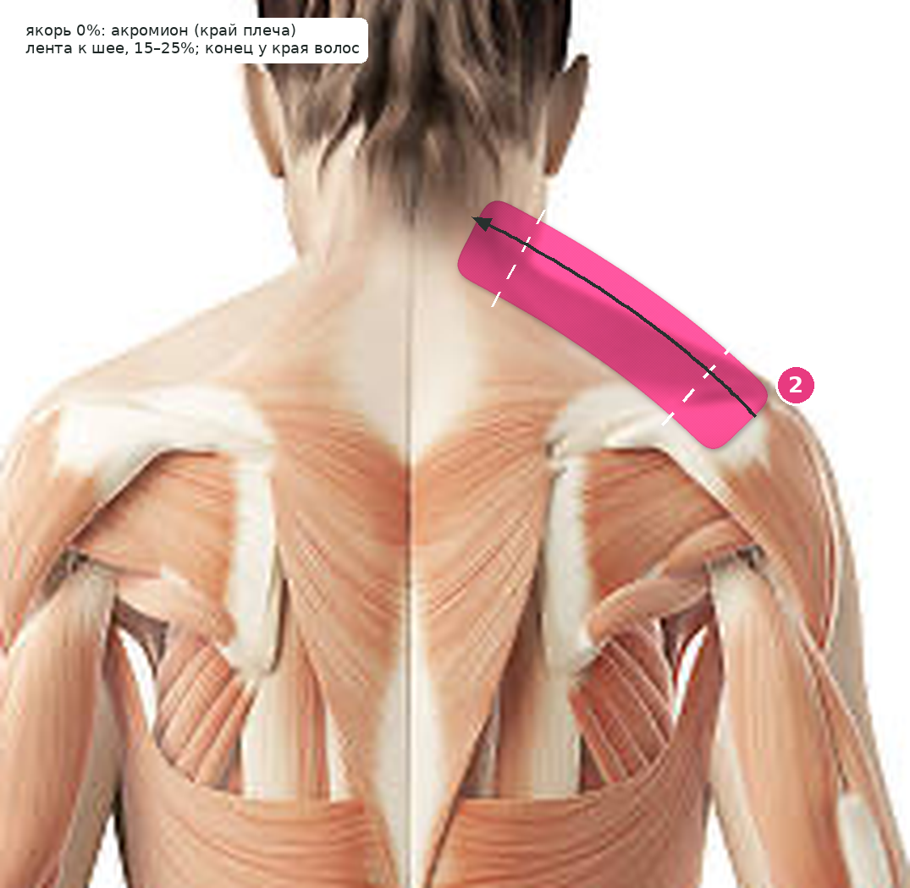
- Якорь 3–4 см без натяжения на акромионе.
- Подруга наклоняет голову влево до лёгкого натяжения справа, не до боли.
- Ленту ведёт по гребню плеча к шее с натяжением 15–25%, по самой выпуклой части мышцы.
- Последние 3–4 см без натяжения, ниже волос. Потереть всю полосу, чтобы клей прогрелся.
3I-полоса на подъёмник лопатки справа
Эта мышца идёт от верхнего угла лопатки к боковой стороне шеи. Её спазм даёт боль «в угол лопатки» и в шею при наклоне и повороте головы.
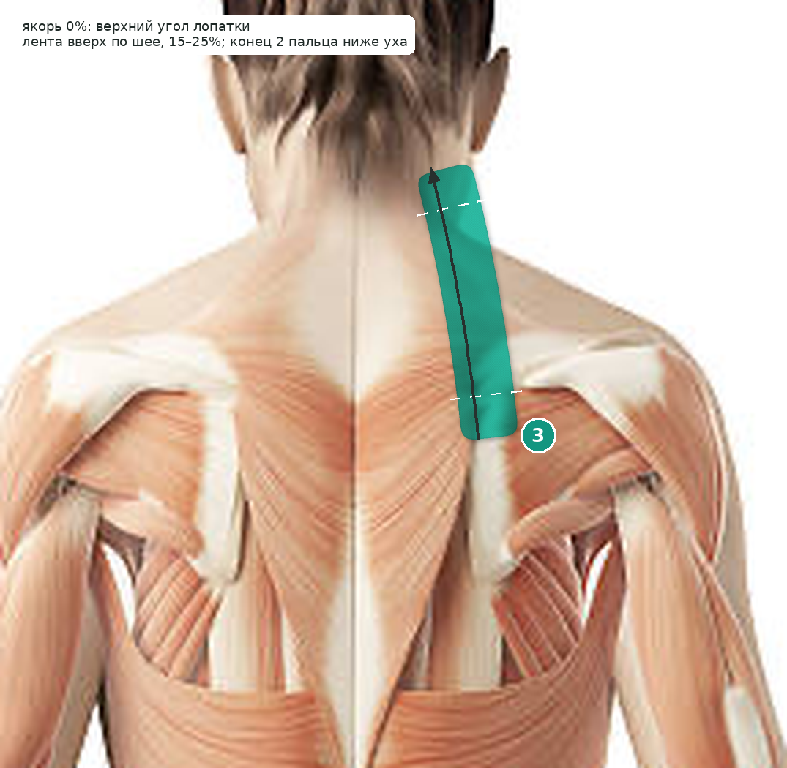
- Якорь без натяжения на верхнем углу лопатки.
- Подруга принимает позу «нос к левой подмышке».
- Ленту вести вверх по боковой задней стороне шеи, она перекрестит полосу 2: это правильно.
- Конец без натяжения, не заводить на ухо и в волосы.
4«Звёздочка» на самую болезненную точку
По желанию. Если у лопатки или на плече есть одна точка, которая болит при нажатии (триггерная точка), разгрузочный тейп над ней приподнимает кожу.
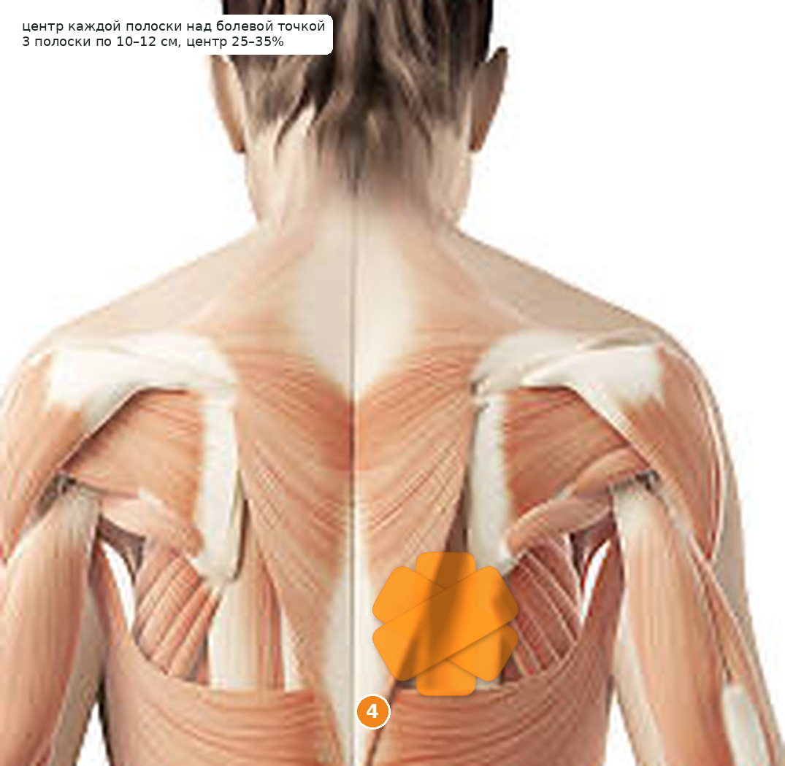
- Найти точку пальцем: где нажатие даёт ту самую знакомую боль.
- Снять бумагу посередине полоски, растянуть центр, приложить над точкой, концы положить без натяжения.
- Вторую и третью полоски наложить так же под углом 60°, чтобы вышла снежинка.
Общие правила
- Кожа чистая, сухая, без крема. Волосы на шее собрать заколкой, пушок можно сбрить накануне (не в день наклейки).
- Клеить за 30–60 минут до душа или сна. Уголки ленты скруглить ножницами.
- Мерить ленту прямо на теле в нужной позе. Отрывать бумагу, не трогая клей пальцами.
- Якоря (первые и последние 3–4 см) всегда без натяжения, иначе кожа раздражается.
- Носить 3–5 дней. С ним можно в душ, промокнуть полотенцем, феном не греть.
- Перерыв 1 день, затем можно повторить. 2–3 курса, если помогает.
- Снимать медленно, по росту волос, придерживая кожу; если трудно, смочить маслом.
- Снять сразу: зуд, жжение, сыпь, пузыри, если боль или онемение усилились.
Упражнения: то, что реально лечит
2–3 раза в день, медленно, без рывков. Растяжку держать 20–30 секунд, 3 раза. Тянуть до лёгкого натяжения, не до боли.
Если при растяжке
стреляет в руку, покалывает в пальцах или кружится голова: остановиться и не повторять до врача.
В быту: тёплый душ или грелка на плечо 15 минут, сумку и ребёнка носить попеременно на обеих руках, телефон поднимать к глазам, а не голову к телефону. Если на работе экран низко, поднять его.
Когда к врачу, а не тейп
- Сразу 112: боль в груди, одышка, боль отдаёт в челюсть или левую руку, холодный пот; внезапная очень сильная головная боль; слабость или онемение половины тела, нарушение речи.
- Ближайшие дни (Hausarzt или Orthopäde): онемение, покалывание или слабость в руке или пальцах, роняет предметы; боль после падения, аварии, резкого рывка; головокружение, двоение в глазах вместе с болью в шее; температура, озноб, сильная скованность шеи; боль сильнее ночью и в покое, не проходит от смены позы; необъяснимое похудение.
- Правая лопатка может болеть от желчного пузыря: если боль приходит после жирной еды, с тошнотой или тяжестью справа под рёбрами, это к терапевту.
- Если за 1–2 недели с тейпом и упражнениями не лучше, тоже к врачу: возможно, нужна диагностика шеи и лечебная физкультура (Krankengymnastik) по рецепту.
Тейп не заменяет осмотр. Боль от шеи в плечо и лопатку бывает и от мышц, и от защемления нервного корешка в шейном отделе, отличить это может только врач.
Когда тейп не клеить
- Аллергия на пластырь или клей (сначала тест: кусочек 2×2 см на сутки на внутреннюю сторону руки).
- Ранки, царапины, ожог, солнечный ожог, свежие шрамы, экзема или псориаз в этом месте.
- Тромбоз, онкология, острая инфекция с температурой, сахарный диабет с плохой чувствительностью кожи: только после разрешения врача.
- Не клеить спереди на шею, на сонную артерию и в ямку над ключицей.
Сводка
| Полоса | Форма и длина | Поза | Натяжение | Носить |
|---|---|---|---|---|
| 1. Вдоль шеи | Y, 20–25 см | подбородок к груди | 10–15% | 3–5 дней, перерыв 1 день |
| 2. Трапеция | I, 20–25 см | ухо к левому плечу, правое плечо вниз | 15–25% | |
| 3. Подъёмник лопатки | I, 15–20 см | нос к левой подмышке | 15–25% | |
| 4. Звёздочка | 3 × 10–12 см | как для 2 или 3 | центр 25–35% |
Все концы и основания без натяжения. Лента 5 см.